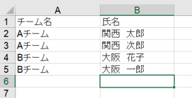

表彰状の作成
表彰状リストを作成し、大会前に印刷、大抵準備日に押印します。
大まかな作業手順は以下の通りです。
1. 表彰状リストの作成
2. 表彰状原稿の修正
3. 差し込み印刷
4. 押印
1.表彰状リストの作成
整理済み参加者リストのデータをもとに、チーム名と氏名のリストを作成します。
- 整理済みexcelブックに新たにシートを追加し「表彰状」という名前にします。
- 表彰状シートのA1をチーム名、B1を氏名にします。
- 選手受付名簿から、チーム名および参加者氏名をコピーし、全員分をリストにします。
「行/列を入れ替えて貼り付け」を使用するとちょっと楽ですが、本来はマクロ化を検討すべきだと思います。
完成する表彰状リストのイメージ
